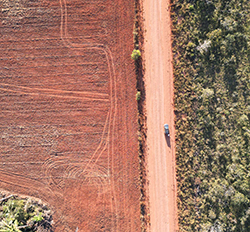

NOTICIA

2026-03-10 | Fuente: VARIAS
LA AMAZONIA BOLIVIANA
La Amazonia boliviana es una de las áreas protegidas más espectaculares de América del Sur. Abarca un área de más de 6 millones de millas cuadradas y es hogar de algunos de los animales salvajes más sorprendentes, por ejemplo, plantas exóticas y ricas experiencias culturales. Desde el dosel verde de la selva tropical hasta los serenos atardeceres rosados en el horizonte, un viaje por la Amazonía boliviana seguramente será una aventura espectacular.